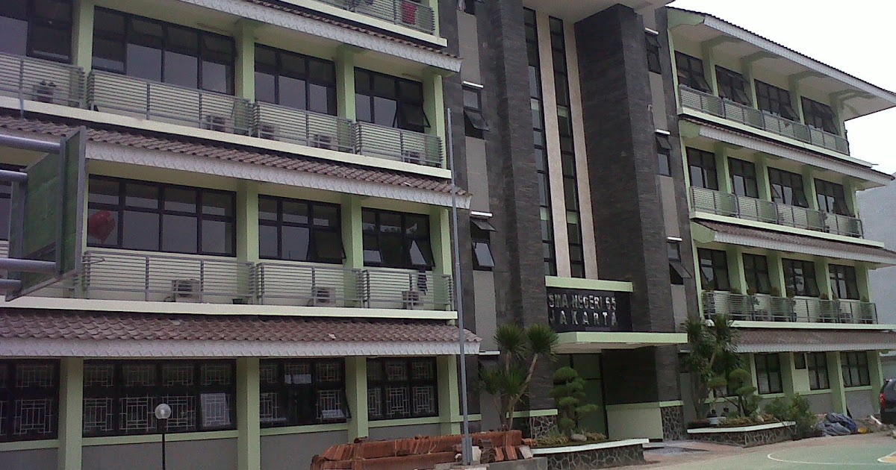

About Me
When were you born?

I was born on December 11th, 2001 in the Capital City Jakarta, Indonesia. I am 18 years old right now by the time I made this website.
Ever since I was born, I grow up and stayed in Jakarta.
What school did you go to?

I went to SMAN 65 Jakarta High School in Kebon Jeruk, West Jakarta. I took the social science program for three years.
I am mostly active in the school choir activity. I also joined the Japanese Club of SMAN 65 Jakarta.
What are your interests?
Music and imaginations. I actually have a lot of interests, but my main interests are music and imaginations.
I adore musical stuffs and I love to daydream. With music, I can express myself and let
my imaginations to flow out from the music that I hear and played. Sometimes I like to tap my finger to a rhythm which
is pretty weird. Oh, and I also like social and political stuffs.
What is your hobby?
In relation to my interests, I also have a hobby in musical stuffs. I play musical instruments and I play the guitar as my main instrument,
but I also played other instruments such as keyboard and violin. I also joined a community choir that usually rehearse every week on Sunday.
Who's your role model?
Honestly, this is hard to pick since I have a lot of role models in my life. But if I have to choose one, I'll go with Gerald Situmorang.
It's kind of ironic since I adore him, yet I made this website about ONE OK ROCK information.
Gerald Situmorang or better known as GeSit is a guitarist from Indonesia. He mainly plays jazz and progressive songs. The reason why
I adore him is because of his virtuosity in music, not only as a guitarist but also as a bassist, producer, and even sound engineer.
The songs that he wrote are pleasant to the ears and rich of flavors. That's why, I aim forward to be like him and soothe others with
the music that I play, just like what GeSit does.
Lastly, why library and information science?
Why not? I mean, library and information science (LIS) is not about being a librarian sitting behind the librarian's desk and asking
people to be quiet. LIS talks way more beyond that. Also, LIS has a lot of work potential in the future since it focus on information management.
Who doesn't need information these days? Information is a valuable resource for everyone and it needs to be managed so that people can find
the information with ease based on their need. That's why, I think LIS is a potential major and therefore I picked it for that reason.
Want to know more about me?
Feel free to contact me on one of my social media below!

ramawib

dimas.rama@ui.ac.id
rama_wibowo